🎯 這次要收集的資料清單
每月定期把以下 3 項資料 從各平台匯出／複製，回傳給 Kristin 統一上傳到分析後台：
📘
Facebook — 每日互動 CSV
粉絲專頁層級每日資料（洞察報告 → 匯出）
📘
Facebook — 貼文明細 CSV
每則貼文的觸及、互動、分享等（內容 → 匯出）
🌟
Google 商家 — 商家資訊 CSV
商家基本檔案
🌟
Google 商家 — 深入分析 CSV
效能報表（GMB Insights）
🔍
Google 商家 — 前 20 名搜尋關鍵字（複製文字）
從商家後台「效能 → 搜尋字詞統計」複製前 20 筆
⚠️ 建議用電腦操作（手機版介面沒有匯出功能）。用 Chrome 或 Safari 皆可，需擁有「粉專／商家管理員權限」。
1 📘 Facebook（共 2 個 CSV）
位置：business.facebook.com（Meta Business Suite）
📅 CSV ① — 每日互動
位置：Meta Business Suite → 洞察報告 → 匯出資料
- 左側點選 「1. 洞察報告」
- 子選單點 「2. 內容」
- 右上角點 「3. 匯出資料」
- 跳出視窗後照下方設定:
- 資料畫面：每日（第 1 步選這裡，其他會自動完成）
- 內容層級：粉絲專頁
- 衡量指標預設值：點進去把 2 個選項都勾起來
- 日期範圍：2026/1/1 – 2026/6/30（或最新月份）
- 最後按 「產生」 → 下載 CSV
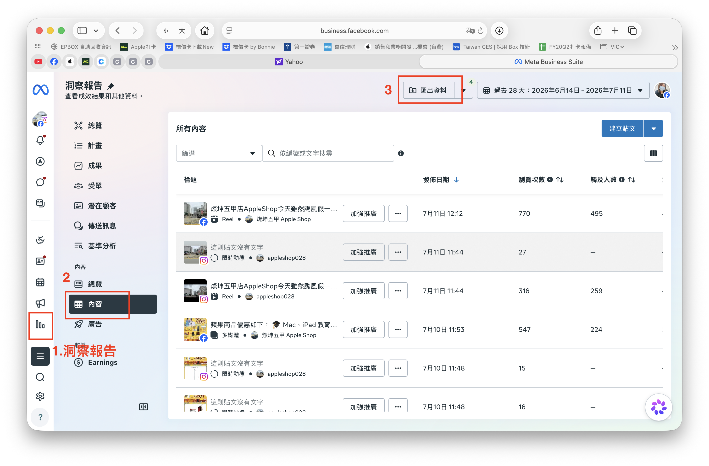
① 洞察報告 → 匯出資料
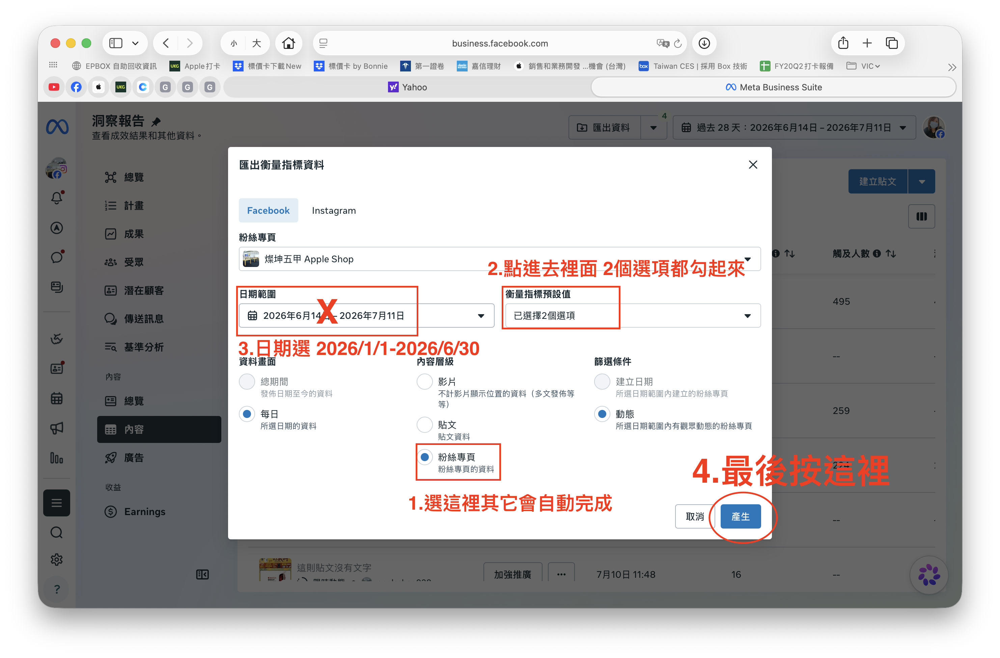
② 選「每日」+「粉絲專頁」+ 日期範圍 → 產生
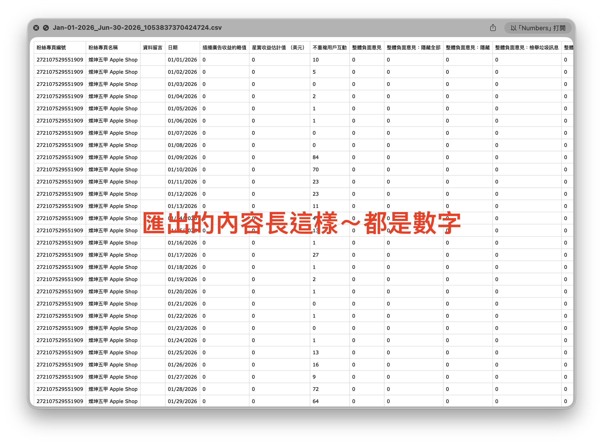
③ 匯出後檔案內容範例（數字為主）
🔥 CSV ② — 貼文明細
位置：Meta Business Suite → 內容 → 貼文和 Reel → 匯出資料
- 左側點 「1. 內容」
- 子選單點 「2. 貼文和 Reel」
- 右上角點 「3. 匯出資料」
- 設定：
- 日期範圍：想匯出的區間
- 衡量指標預設值：已發佈
- 資料畫面：每日
- 內容層級：貼文
- 篩選條件：建立日期
- 按 「產生」 → 下載 CSV
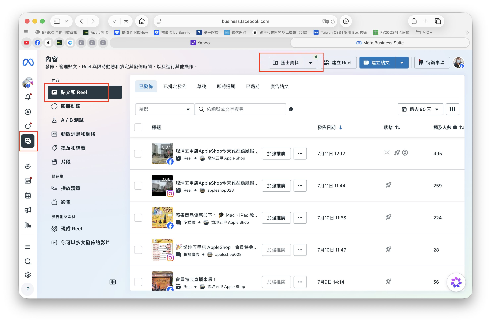
① 內容 → 貼文和 Reel → 匯出資料
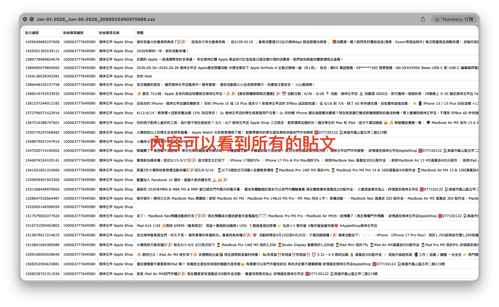
③ 匯出後可看到每則貼文明細
✅ 完成 Facebook — 你應該有 2 個 CSV：一個每日互動、一個貼文明細
2 🌟 Google 商家（2 個 CSV）
位置：business.google.com/locations（Google 商家檔案管理工具）
📋 CSV ④ + ⑤ — 商家資訊 & 深入分析
- 登入 Google 商家後台，選擇你的店家
- 在商家列表 勾選你的店家（左側 checkbox）
- 右上角出現 「動作」 下拉選單，點開
- 選 「下載」 底下的兩個項目：
📄 商家資訊
📊 深入分析
→ 這兩個檔案都要下載
- 格式選 .csv（逗號分隔值） → 下載
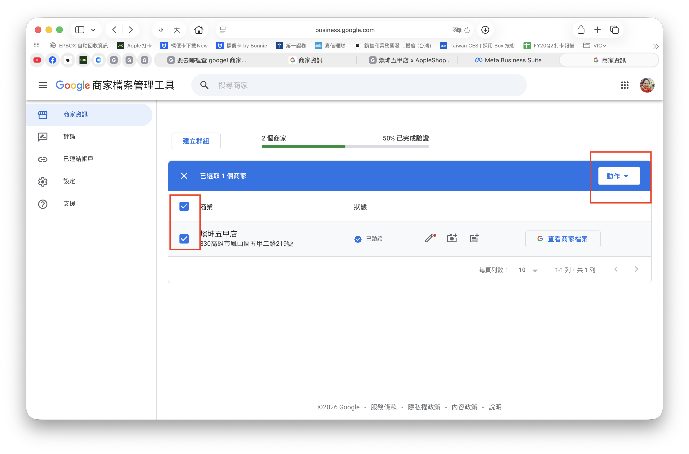
① 勾選店家 → 右上角「動作」
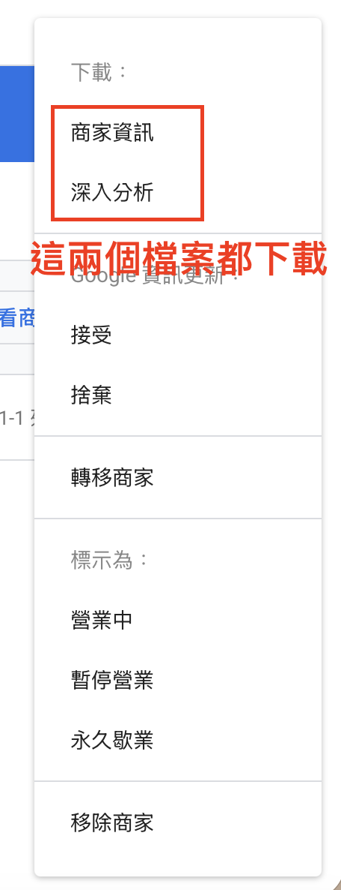
② 選「商家資訊」與「深入分析」（兩個都要）
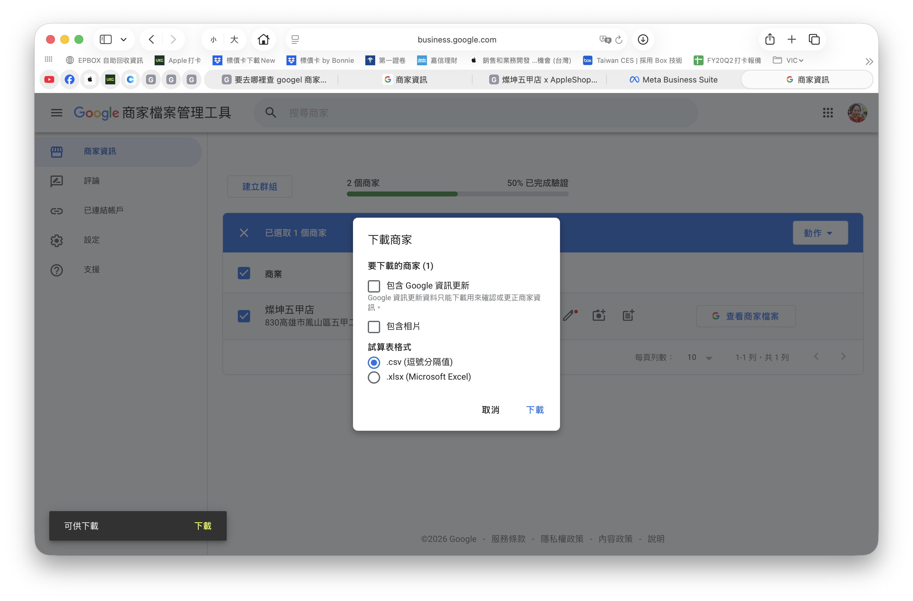
③ 格式選「.csv」→ 下載
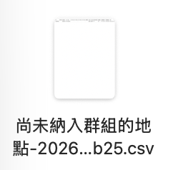
⑤ 以及 GMB Insights 深入分析
✅ 完成 Google 商家 CSV — 你應該有 2 個 CSV：商家資訊 + 深入分析（GMB Insights）
3 🔍 Google 關鍵字（複製文字）
因為 Google 沒有提供關鍵字資料的 CSV 匯出，需要 手動複製前 20 名。
取得方式
- 用 Google 搜尋你的店家名稱，例：
燦坤五甲店 x AppleShop 五甲店
- 右側商家檔案面板中，點 「成效」 按鈕
- 捲到「使用者如何找到你」→ 「搜尋字詞統計」
- 點右下角 「顯示更多資訊」
- 複製前 20 名的內容（序號、關鍵字、次數）
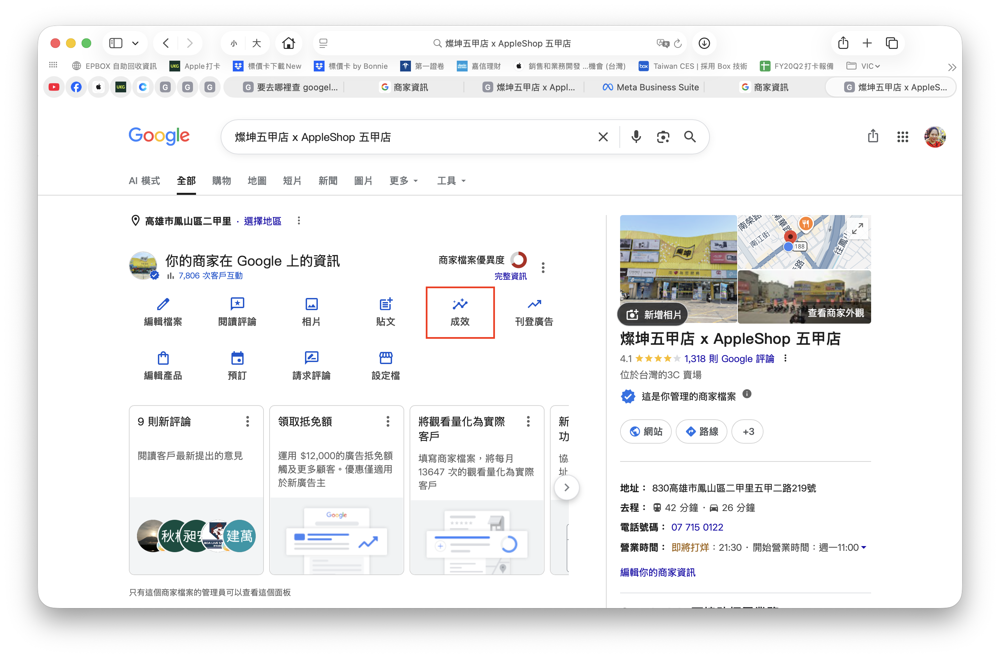
① 搜尋商家 → 點「成效」
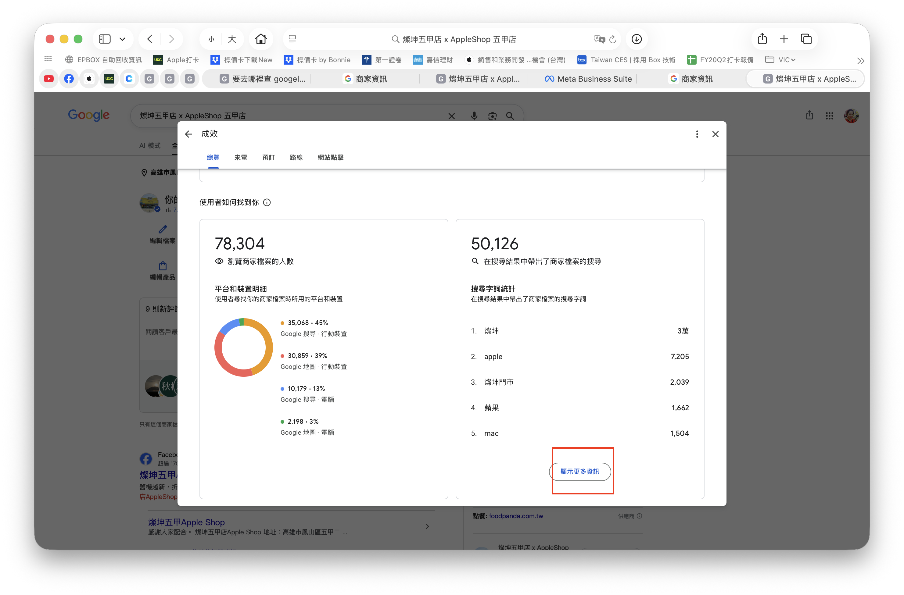
② 找到「搜尋字詞統計」→ 顯示更多資訊
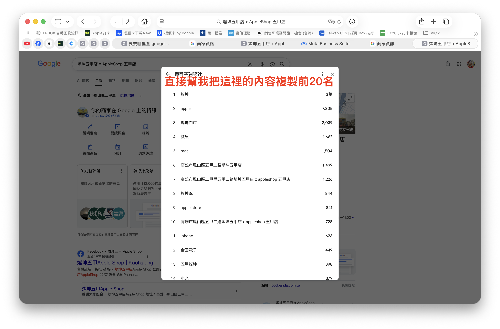
③ 複製前 20 名內容（會像下方範例）
複製後的格式範例
1.
燦坤
3萬
2.
apple
7,205
3.
燦坤門市
2,039
...
20.
（第 20 名關鍵字）
XXX
✅ 完成關鍵字 — 貼到記事本或直接放在 Email／訊息內傳給 Kristin
4 📤 把資料回傳給 Kristin
要傳的東西總共 6 項：
| 類別 | 檔案／內容 | 形式 |
|---|
| 📘 FB | 每日互動 CSV | 檔案 |
| 📘 FB | 貼文明細 CSV | 檔案 |
| 🌟 Google | 商家資訊 CSV | 檔案 |
| 🌟 Google | 深入分析 CSV | 檔案 |
| 🔍 Google | 前 20 名搜尋關鍵字 | 文字 |
傳送方式（選一種）
- Email：把 5 個 CSV 檔案附上，關鍵字直接貼在信件內文
- LINE / iMessage：把檔案傳給 Kristin，關鍵字用文字訊息貼上
- 共用資料夾（若有）：Google Drive / iCloud 分享連結
⚠️ 檔案命名建議：可以在檔名前加上你的店名，方便辨識，例：
五甲店_FB_每日.csv、華榮店_IG_貼文.csv
📅 建議每月月初回傳一次（例如每月 5 號前），因為貼文數據會持續更新 24-72 小時，月初匯出上個月的資料最準確。
🎉 完成後你會回傳這 5 項資料
2FB CSV
2Google CSV
1關鍵字文字
❓ 常見問題
Q1：找不到匯出按鈕？
Meta 介面常改版，若找不到：每個資料卡片右上角有 ⬇️ 或 ⋯，或整個頁面右上角。找不到就截圖問 Kristin。
Q2：一定要用電腦嗎？
是的，手機版沒有匯出功能。
Q3：檔案打開亂碼？
用 Excel 或 Numbers 打開，如果亂碼：另存新檔 → 編碼選 UTF-8。
Q4：我的店家資料會被其他店看到嗎？
不會 🔒 Kristin 會統一上傳到後台，各店的數據都獨立呈現。
Q5：多久要傳一次？
每月一次，建議月初 5 號前傳上個月的資料。